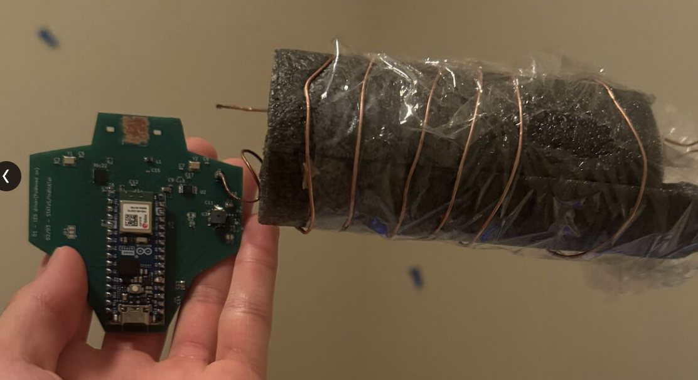
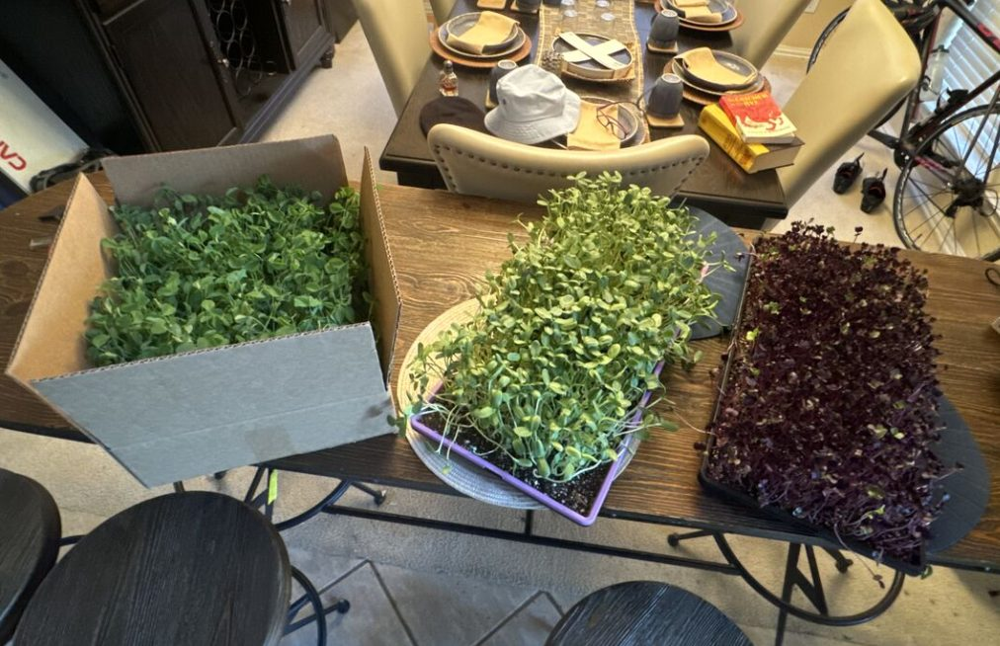
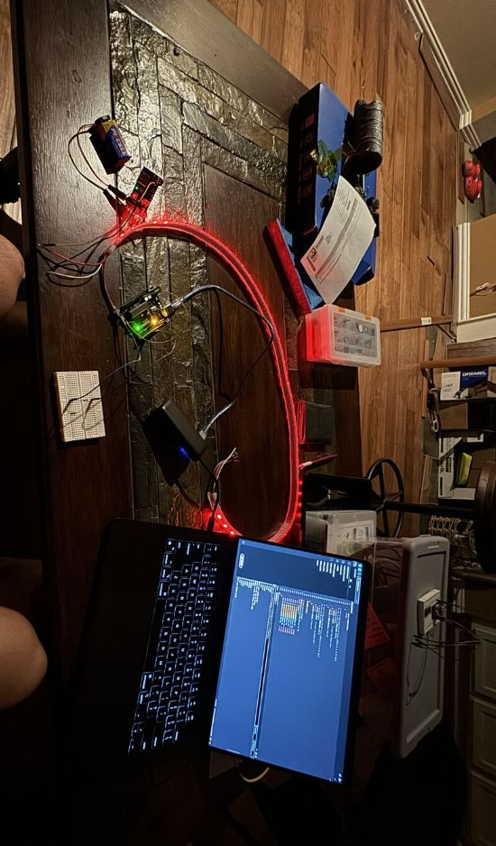
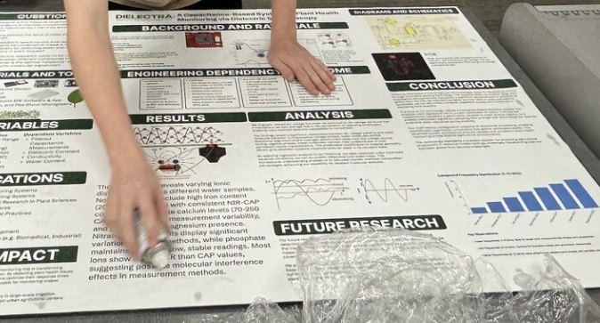

- Premise
- Stop optimising for more plants and start measuring the quality of each individual plant
- Method
- Dielectric spectroscopy — sweep frequency across leaf tissue, read capacitance and conductivity, infer ion content
- My scope
- The PCB: sensor front ends, waveform generation, onboard regulation, layout
- Team
- With Lakshay Yadav and John Teerman · began as a science fair project, still ongoing
- Status
- Prototypes calibrated · early findings · results are preliminary, not validated
Credit where it belongs
This is a three-person project with Lakshay Yadav and John Teerman. The electronics described below — sensor selection, the board, and the front ends — are the part I owned. The experimental design, plant science, and analysis were shared work.
1 — Why dielectric response says anything about a plant
A leaf is mostly water with dissolved ions in it. Water is strongly polar, so it responds to an applied electric field — and how strongly it responds depends on what is dissolved in it. Measure that response and you are measuring, indirectly, the ionic content of the tissue.
- Capacitance tracks water content and ion concentration. More free polar molecules means more charge stored for the same applied voltage.
- The response is frequency-dependent, which is the whole point. Different molecular species relax at different rates, so sweeping frequency separates contributions that a single-frequency measurement blends together.
- It is non-destructive. Conventional nutrient assay means taking tissue away and running chemistry on it. A dielectric measurement leaves the plant growing, so the same plant can be measured repeatedly over time.
2 — The board

| Part | Job | Why this one |
|---|---|---|
| AD9833 | Waveform generation | Direct digital synthesis gives a programmable, repeatable frequency sweep — the independent variable the whole experiment turns on. A fixed oscillator would collapse the study to a single point. |
| FDC2214 | Capacitance to digital | LC-based, 28-bit, sensitive to small near-proximity changes. Measures the tank the coil forms with the sample rather than requiring electrode contact. |
| MPR121 | Multi-electrode capacitance | 12 channels of contact-mode sensing — spatial coverage across a leaf instead of one reading per sample. |
| AS7263 | NIR spectral | Six-channel near-infrared. An optical measurement of the same tissue, independent of the electrical path. |
| Nano 33 IoT | Acquisition | I²C for every sensor on one bus, plus wireless off-board so a logging laptop isn't tethered to the plant. |
- Two capacitive methods, deliberately. The FDC2214 is near-proximity and LC-dependent; the MPR121 is direct multi-electrode. They fail differently, so agreement between them is worth more than either alone.
- Onboard voltage regulation so the analog front ends do not ride the same rail as the digital switching — the same reasoning as the ferrite-isolated VDDA on my CAN node, applied to a much smaller board.
- An optical channel as an independent check. If the capacitive and NIR channels disagree about the same leaf, that disagreement localises the problem instead of leaving one unverifiable number.
3 — The pulse-waveform hypothesis
The idea the project is really testing
Beyond passive measurement, we kept a pulse waveform in the system on the theory that alternating voltage could isolate and agitate specific compounds within the leaf — driving a response from one species while leaving others comparatively still, and making them separable in the reading.
This is a hypothesis, not a result. It is the reason the AD9833 is on the board rather than a fixed oscillator: testing it requires arbitrary control over frequency, and that requirement drove the part selection.
4 — Testing it on real plants


What the early data suggested
Comparing water samples of differing ionic composition produced measurable differences in dielectric response. The pattern worth naming is not any single reading:
- Ion species behaved differently from one another. Phosphate held comparatively stable readings; nitrate showed significant variability between methods.
- The two channels disagreed in a structured way. Most ions read differently through the NIR path than through the capacitive path — which points at molecular interference affecting one method and not the other, rather than at random noise.
- That disagreement is the finding, at this stage. It says the two methods are not measuring quite the same thing, which is exactly what needs pinning down before either can be trusted as a calibrated instrument.
How far this actually goes
These are early-stage results from prototype hardware, and we have said so consistently. The measurements are repeatable enough to show structure and nowhere near validated enough to call a calibrated assay. What exists is a working instrument and a first pass at what it can distinguish.

What I took from it
- Part selection follows the experiment, not the other way round. The AD9833 is there because the hypothesis needs a frequency sweep. Pick a fixed oscillator and you have quietly decided not to test the thing you set out to test.
- Two imperfect sensors beat one trusted sensor. Neither capacitive channel is authoritative alone, and the optical channel is independent of both — so their disagreement carries information a single reading never could.
- Bounding a claim is part of the work. The interesting result here is structured disagreement between methods, and saying that plainly is more useful than presenting a number the hardware cannot yet support.